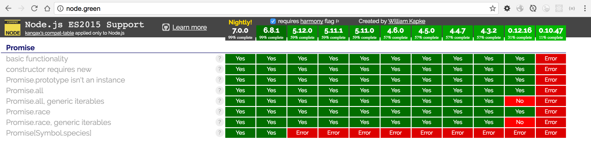

从0.12开始部分支持，到4.0支持绝大部分了。

但性能比较低，所以一般是使用bluebird替换的。
Promise扩展类库除了实现了Promise中定义的规范之外，还增加了自己独自定义的功能。
按字母排序
1. based on es6-promise, so excluded from the registery by default ↩
Promise扩展类库数量非常的多，我们只介绍其中两个比较有名的类库。
类库 Q 实现了 Promises 和 Deferreds 等规范。 它自2009年开始开发，还提供了面向Node.js的文件IO API Q-IO 等， 是一个在很多场景下都能用得到的类库。
这个类库除了兼容 Promise 规范之外，还扩展了取消promise对象的运行，取得promise的运行进度，以及错误处理的扩展检测等非常丰富的功能，此外它在实现上还在性能问题下了很大的功夫。
Q 和 Bluebird 这两个类库除了都能在浏览器里运行之外，充实的API reference也是其特征。由于Bluebird的性能比较好，所以我们一般用Bluebird的时候会比较多。
Q等文档里详细介绍了Q的Deferred和jQuery里的Deferred有哪些异同，以及要怎么进行迁移 Coming from jQuery 等都进行了详细的说明。
Bluebird的文档除了提供了使用Promise丰富的实现方式之外，还涉及到了在出现错误时的对应方法以及 Promise中的反模式 等内容。
这两个类库的文档写得都很友好，即使我们不使用这两个类库，阅读一下它们的文档也具有一定的参考价值。
tj: bluebird is MASSIVE, why not use v8's?
bluebird是Node.js世界里性能最好的Promise/a+规范的实现模块，api非常齐全，功能强大，是原生Promise外的不二选择。
安装bluebird模块
$ npm i -S bluebird
见代码hellopromise-bb.js
// callbacks to promise
var fs = require("fs");
var Promise = require("bluebird");
function hello (file) {
return new Promise(function(resolve, reject){
fs.readFile(file, (err, data) => {
if (err) {
reject(err);
} else {
resolve(data.toString())
}
});
});
}
hello('./package.json').then(function(data){
console.log('promise result = ' + data)
}).catch(function(err) {
console.log(err)
})
它和之前的hellopromise.js执行结果是一模一样的，只差一行代码，即
var Promise = require("bluebird");
由此可以看出，Node.js原生的Promise和bluebird的实现是兼容的。只要掌握其中任何一个，几乎是0成本代价就可以学会。
这里用的是var来声明Promise，主要目的是为了当前文件使用，如果是koa或express这样的web项目里，使用全局替换呢？
其实也很简单，使用global全局替换就好，在应用的入口文件app.js里
global.Promise = require("bluebird");
性能会有明显的提升。
另外八卦一下，node之前版本的promise是有内存泄漏的，而使用bluebird不会遇到这样的坑
Promisification means converting an existing promise-unaware API to a promise-returning API.
这里主要介绍一下bluebird的promisefy和promisifyAll
promisifyAll更彻底，对类方法或者对象方法都可以进行promisify处理，是最简单的包裹promisify的常用手段，比如
var Promise = require("bluebird");
var fs = Promise.promisifyAll(require("fs"));
fs.readFileAsync("./package.json", "utf8").then(function(contents) {
console.log(contents);
}).catch(function(e) {
console.error(e.stack);
});
再来个稍微复杂一些的，下面这个例子有abc 3个方法，每个都是普通函数，通过bluebird的promisifyAll让他变成promise对象，继而完成流程控制。
var Promise = require("bluebird");
var obj = {
a: function(){
console.log('a')
},
b: function(){
console.log('b')
},
c: function(){
console.log('c')
}
}
Promise.promisifyAll(obj);
obj.aAsync().then(obj.bAsync()).then(obj.cAsync()).catch(function(err){
console.log(err)
})
是不是非常简单？
危险常常来自便利处，大量的这样promisifyAll，会不会有性能问题呢？error被bluebird包裹了，我们自己想定制呢？
源码 https://github.com/calvinmetcalf/lie/blob/master/lib/index.js